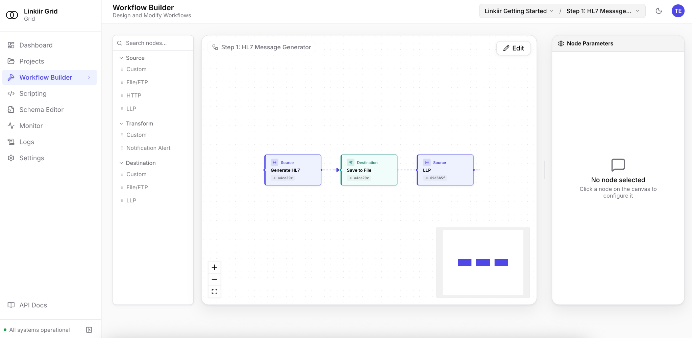
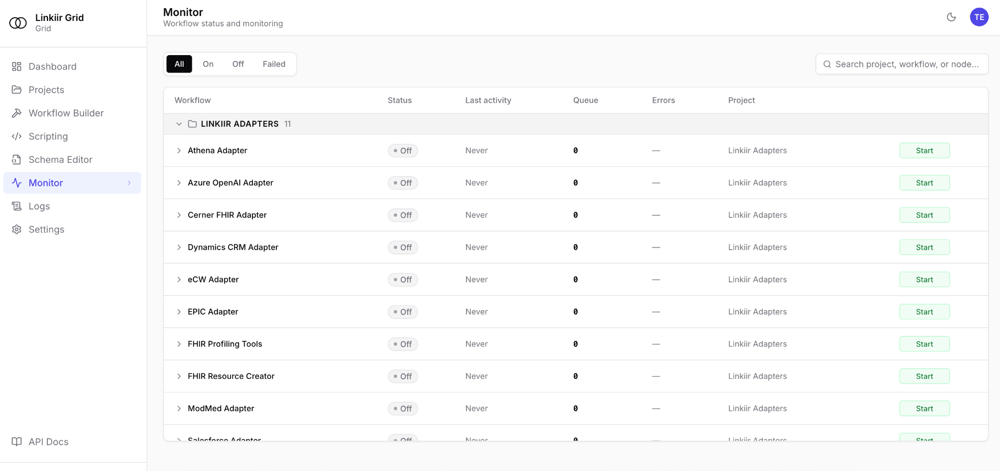
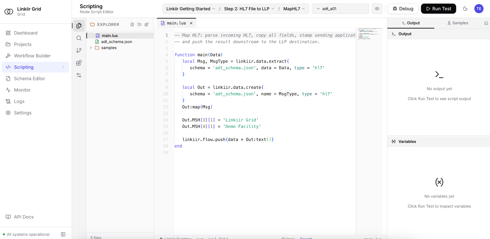

Hospitals · Labs · VendorsLinkiir Grid · Parse, transform and routeYour next destination
01 / A REASON TO RECONSIDER
Your integration needs have moved forward. Has your platform?
More connections. More expectations.
New applications, FHIR APIs and downstream data needs put more demands on the interfaces your team already maintains.
Changes shouldn’t depend on one person.
If only a few specialists understand an interface, every change becomes harder to plan, review and hand over.
A renewal is a chance to reassess.
Look at the whole operating model: licensing, infrastructure, support, deployment choices and the work of maintaining your connections.
02 / PUT GRID ON YOUR SHORTLIST
Compare the work. Then choose the platform.
Bring one real workflow. Compare how you build it, operate it and stay in control.
Linkiir Grid capability evaluation
What matters
With Linkiir Grid
What to compare in your current engine
Build & change
Bring sources, transformation steps and destinations together in a visual workflow.
Change a mapping. Review the result. See how easily another engineer can understand it.
Data & delivery
Parse, map, validate and route HL7, FHIR, API and file-based data.
Use the same sample messages, endpoint requirements and delivery checks.
Visibility & recovery
Monitor workflows, inspect message history and investigate errors in the product.
Trace a failed message. Test recovery and replay with your duplicate-handling rules.
Deployment & control
Run workflows in your environment with your access rules and destinations.
Confirm who owns infrastructure, upgrades, access and operational support.
Optional AI
Enable AI when you choose. Configure models and permissions, and approve commits.
Check data boundaries, user permissions and approval behavior on your actual version.
Use this framework to evaluate your own workflow. Capabilities and terms depend on the product version and configuration.
Start with the interfaces you know. Iguana X documents components, Translator customization and message logging. Inventory the components and custom logic you rely on, then compare how one representative flow is built and maintained in Grid.
Review your version. Revisit your options. Mirth Connect moved to commercial-only licensing from version 4.6. Review your current version, channel logic, extensions and support terms before planning a staged transition. Earlier open-source releases are a separate consideration.
Compare the operating model. Rhapsody offers Axon AI and multiple deployment options. Evaluate Grid using your routing rules, transformations and operational checks. Compare the configuration and support your team actually needs.
Map the dependencies before the move. Cloverleaf offers healthcare integration and visual development. Start by reviewing your routes, transformations, custom logic and connected systems. Use that inventory to scope a representative Grid pilot.
Put the build experience to the test. Corepoint offers no-code-required integration and Axon AI. Compare a real workflow in both products, including mapping changes, message inspection, recovery and the handover to your operations team.
Explore Alternatives to Your Current Integration Engine
Choose a representative interface and test how your team would build, run, and maintain it in Grid.
Linkiir Grid as an Iguana Alternative
Start with an Iguana interface that uses custom Translator logic and compare the HL7 outputs field by field. Grid’s visual Workflow Builder gives your team a shared view of the routing steps around custom transformation logic, so more engineers can review how an interface works.
Pick a Mirth Connect channel with multiple destinations and run de-identified samples through both workflows. Grid gives you a way to validate one channel at a time, comparing filters and destination-specific outputs before changing the production route.
Simulate a destination outage on a route your team supports. Grid brings queue status and message history into the same workspace, helping on-call engineers trace a delivery failure and verify recovery.
Choose a Cloverleaf HL7 feed shared by several facilities and test samples from each site. Grid’s visual workflows make it easier to review which routing and mapping rules facilities share and where each site needs its own logic.
Recreate a Corepoint interface in Grid and ask an engineer who didn’t build it to update a mapping. Grid shows workflow steps and message history in one workspace, giving the next engineer a place to trace what a mapping change affects before handing it off for review.
Plan to run Grid alongside your existing engine. Validate a defined workflow before you change its production route.
Use replayed or approved mirrored samples for validation. Keep test outputs isolated to avoid duplicate production actions.
Assess. Choose the first flow. Inventory interfaces, scripts, dependencies and delivery rules. Agree what a successful migration looks like.
Validate. Prove the output. Recreate and test the workflow in Grid. Compare outputs, error handling and recovery using representative samples.
Transition. Switch when ready. Approve a controlled cutover with monitoring and a rollback plan. Repeat for the next interface.
04 / INSIDE LINKIIR GRID
See your integrations. Understand every step.
Actual Linkiir Grid screens. A workspace for the people who build and run healthcare connections.

Build a workflow you can follow.
See sources, processing steps and destinations together on the canvas.

Keep an eye on the connections.
Inspect workflow status, queue activity and errors from the monitoring workspace.

Get closer to the logic.
Inspect transformation code and use the editor’s testing and debugging tools.
1 / 3 · Build a workflow you can follow.
BEFORE YOU MAKE A MOVE
A few good questions.
Do we have to replace everything at once?
No. Start with a defined interface and validate it alongside your existing environment. The migration sequence and cutover plan depend on your endpoints and operational requirements.
Will existing interfaces import automatically?
Plan for an assessment. Scripts, mappings, adapters and engine-specific behavior may need changes. We can review a representative interface and agree the migration work before you commit.
Do we need to use AI?
No. Grid can run with AI disabled. If enabled, your team configures approved model endpoints and permissions. External model requests go to the provider endpoint you configure.
What should we bring to a demo?
Bring a source and destination, de-identified sample messages, the transformations you need and the delivery requirements. We’ll focus the conversation on your integration.
05 / YOUR NEXT CONNECTION STARTS HERE
Bring a workflow. See what’s possible.
Book a technical demo or request a 15-day sandbox. Evaluate Grid on the work your team actually does.